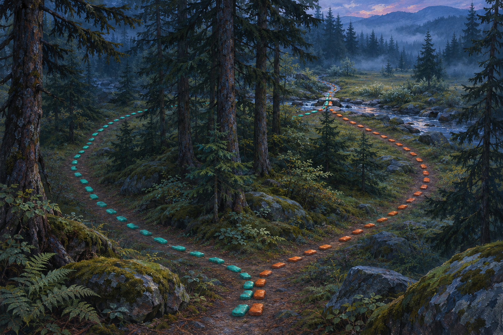

I can see the input and read the answer, but how did the model get from one to the other?
I think of walking through a forest for the first time. At a fork, I choose a trail and keep going. An hour later, when I try to retrace my steps, both trails look familiar. That’s when I wish I’d left a stone at the turn.

That’s where my intuition came from. If I want to understand the paths a Transformer takes, I should start leaving markers while it’s learning. I picture them as colored stones. Where the computation forks, each branch gets its own color. Where two branches meet, the next stone points back to both. Later, when I reach that stone, I can see the two routes that brought me there.
To make a map from those stones, I need to remember how they connect. I store each training journey as a directed acyclic graph (DAG). Each stone records one step in the computation. Each link shows which step fed into the next. I can follow those links forward from the entrance or trace them backward from any fork along the way.
By the end of training, I have a collection of maps. Now imagine walking into the forest again. At the first fork, I recognize a stone from an earlier journey. A little farther on, my trail turns away from the old one. Down by the stream, the two trails meet again. If I’d only marked the entrance and the clearing, I would have missed that detour.
That’s what I want to see when the model answers a new input. I mark its trail all the way to the answer, then follow it alongside the journeys I saved during training. With those maps in front of me, I can finally ask: how did I get from point A to point B?
For our first forest, we wanted a trail short enough to follow from end to end. Point A would be a handful of numbers. Point B would be the model’s answer. We chose a game where we could work out the correct answer ourselves and then see how the model got there.
The game needs four places: two numbers to choose between, an instruction that tells the model which one to read, and a final position where we read its answer. Here’s one input we set aside before training.
First2Second5Selector10Readout12
The instruction is 10. An even instruction means “read the first number”; an odd one means “read the second.” So we read 2, which is even. The last token, 12, marks the answer position.
Why follow the 5? Try replacing it with a 7. The rule still selects the 2, so the correct answer is still even. That makes the 5 an interesting place to look. In the recorded run, the model used a message from the 5 when it calculated its answer. We follow that message to see how it joined the others. Later, we compare its stones with a saved training trail.
The trail from 5 forks, then rejoins
One branch carried a vector of eight numbers describing what 5 could send. On the other branch, the model compared keys from all four positions and gave 5 an attention weight of 0.386 at the readout. The two branches met when the model multiplied that weight by the vector. That product was the message from 5.
At the readout, this message joined the other three messages and the existing readout state. The resulting value passed through twelve neurons and a shortcut. Their contributions met again, and the model produced a score of −0.765. A negative score means even. That was its answer.
Which training trail came closest?
We took the new input’s trail and compared it with each of the 960 trails saved while this model was learning. For each pair, we lined up stones from the same operation and position. We combined the differences in their recorded values into one score, taking into account how each stone connected to the ones before it. We left the final answer score out of the search. The smallest overall difference belonged to a training example from step 95.
Inputs at the start of each trail
New input
2
5
10
12
Training step 95
2
5
8
12
Now look at the second number in each row. It’s 5 both times. The instructions differ, but 10 and 8 are both even, so both point to the first number, 2. In each run the 5 still sent a message to the answer position. That gives us the same question to ask of both trails. How did the model turn that 5 into a message each time, and what happened when it joined the others?
The map below opens on the 5 in each run. Follow the two messages to the point where they merge with the others, then on to the answer. Across the full map, 46 of the 76 pairs of stones fell within our similarity cutoff.
Lay the two trails together
● Inference◆ Training · step 95
Read left to right. A circle and diamond touch where the recorded values align. They separate where the values differ. Both runs use the same connections.
Walk one stone at a time
You are comparing the original inference with the archived training example at step 95. Start at an input and take one recorded connection at a time. Where the computation forks, you choose which branch to follow. Touching stones mean the two values are close; separated stones mean they differ.
Check this stone’s recorded valuesInspect the two trails stone by stone
Stone inspector
From input to answer
How the records were matched
The search compared all 960 training occurrences within this model. It compared values at the same operations and positions and selected the closest record without using the answer margin. A stone aligns locally when its normalized distance is at most 0.15. In this pair, 46 of 76 stones aligned. The full-journey search found only partial correspondence for this input.
What if learning through the 5 had been different?
The stones led us back to step 95 twice. That training example had the closest trail overall. Within it, the stones leading to the 5’s message were the closest match among the three branches we compared. That gave us a specific moment to revisit. Would learning through that message change the answer the model gave later?
We rewound training to just before step 95 and gave the model [2, 5, 8, 12] again. The 5 still sent its message, and the model made its prediction as usual. The change came when the model learned from that prediction. For this example alone, we blocked the learning signal flowing back through the 5’s message. Then we finished training with the same batches in the same order.
Finally, we gave the model the original input, [2, 5, 10, 12]. With ordinary training it had answered even (−0.765). After the replay it answered odd (+0.074). The correct answer was still even. In separate replays, blocking the message from the 2 or from the instruction kept the answer even. For this input, learning through the 5’s message at step 95 made a difference to the later decision.
Even0Odd
Evidence and limits
How often did a branch like the 5 change the answer?
We followed the same rule for 16 held-out inputs in each of eight trained models. Each time, the stones pointed to a training branch before we ran the replay. In 1 of those 128 cases, blocking learning through that branch changed the later answer. That was the 5 at step 95. In the other 127, the score stayed on the same side of the line between even and odd.
A score can move without crossing that line. So we also asked how far it moved when we blocked each branch in turn. In 92 of 128 cases, blocking the branch picked by the stones moved the score farther than the average shift from blocking its two siblings separately.
On this task, the stones gave us a way to choose a specific moment in training and test its influence. The replay showed that learning through the 5 mattered to one later decision.
Could we follow a whole trail the way we followed the 5?
With the 5, we followed one message to the answer. For a whole trail, we had to account for every fork and every merge. We compared 640 new journeys with their models’ training records. No single training journey matched all the way through. In 28 of 640, we could piece together a continuous map from several training records. Each piece covered connected steps, and neighboring pieces had to agree on the stones where they joined.
Could the stones fit together even if the model had never trained on the examples that supplied them? In a separate test of 384 cases, training examples supplied a complete trail in 10 cases. Examples the model had never trained on supplied one in 12. Four cases appeared in both groups.
That’s why we needed the replay. The stones showed which pieces fit together. To find out whether learning from those examples affected the later answer, we had to change what happened during training. For each of the original 28 maps, we went back to all the training examples that supplied its pieces and blocked their contributions to learning. We also replayed training with the same number of comparison examples blocked at the same steps. After each replay, we checked the score for the input we had traced and for 15 other inputs.
In 23 of the 28, the effect was more specific to the traced input. To measure that, we took the size of its score change and subtracted the average change for the other 15 inputs. That difference was larger for the examples picked by the stones than for the comparison examples. The comparison examples actually moved the traced input’s score farther on average. Across all 28 journeys, every even-or-odd answer stayed the same.
One whole journey from four training records
Try [3, 5, 8, 12]. The instruction 8 selects the first number, 3. The model answered odd. This is the assembly with the fewest training records among the 28, so you can see every handoff in one map. Each colored letter stands for one saved training example.
A Step 119, row 0 · [3, 5, 10, 12]
B Step 119, row 5 · [2, 6, 8, 12]
C Step 116, row 7 · [1, 5, 8, 12]
D Step 118, row 7 · [1, 5, 11, 12]
Read each input branch from left to right. A change of letter marks a join between records.
Branch
Input
Attention score
Shared routing
Message
Shared merge
First number · 3
A
A
C
A
A
Second number · 5
A
A
C
A
A
Instruction · 8
B
B
C
C
A
Answer position · 12
A
A
C
D
A
Follow the instruction row. Record B supplies the 8 and its attention score. Record C picks up at that score and combines all four scores to decide how much weight to give each message. C also supplies the instruction’s message. Record A picks up at that message and merges it with the others. At each handoff the two records agree within the experiment’s tolerance.
Check the B → C join
The shared stone is the attention score linking the instruction to the answer position. Rounded to three decimals, B recorded −0.305 and C recorded −0.256. The new input recorded -0.330. These are scores before the model converts them into attention weights.
After the merge, A supplies the state that feeds twelve parallel neuron branches. Their pieces come from two records: A neurons 1, 4, 7, 8, 9, 10, 11 · D neurons 0, 2, 3, 5, 6. All twelve contributions and the shortcut meet in A for the final score.
What changed when we replayed this journey?
We blocked learning from A, B, C and D at their original training steps, finished training, then tried the same input again. Its score went from +5.067 to +5.042, a small shift toward even. The answer stayed odd.
This is one of the 23 cases. Removing these four examples moved this input’s score by 0.026 and the other 15 inputs by 0.020 on average. The comparison replays moved this input more (0.111), but moved the others even more (0.124). That is what “more specific” means here. The replay measures the effect of learning from the four examples together. It cannot assign that change to any particular join.
How did I get from point A to point B?
For a new input, the stones let us retrace the recorded computation from input to answer, including both sides of a fork. Looking back into training, we could sometimes match that whole route piece by piece and identify examples whose learning had a more input-specific effect in replay. The 5 shows how far we could go for one branch. Changing its learning changed the answer. For the whole trails, we have evidence about the influence of the examples that supplied the pieces. Whether the model learned and reused those pieces as one connected route is still open.
Experiment
Observation
Records
Single-branch replay
Blocking the selected training branch changed one later decision in 128. Dropping the selected example’s entire learning contribution changed three.
In a separate 384-case test, complete assemblies appeared for 10 cases using training records and 12 cases using never-trained input records, counting four cases in both. An overlay alone cannot establish training influence.
In 23 of 28 assemblies, removing the selected training occurrences affected the target score more selectively than same-step controls did. Controls produced larger absolute target changes on average. No answer flipped.
The replay kit includes source code, the model’s 120 training snapshots, the expected outputs, and a verification script. Unzip it and run python3 verify.py with NumPy installed.